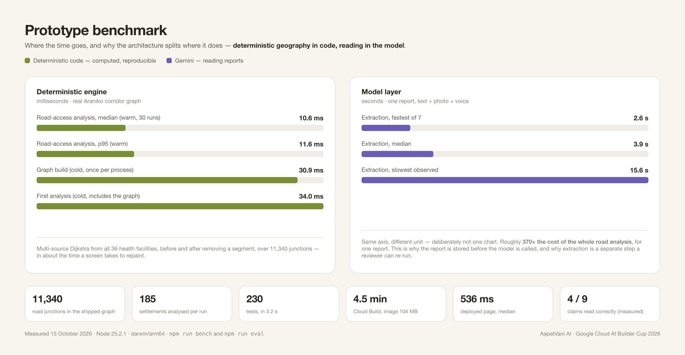

Prototype benchmark
What the prototype actually costs to run, measured rather than estimated: the road-access analysis, the model calls, the deployed service and the extraction accuracy — with the method for each so the numbers can be reproduced or disputed.
Everything here was run against the real system — the shipped Araniko corridor dataset, the deployed Cloud Run service, and live model calls. No figure is an estimate. Each section names the command that produces it.
| Layer | Method | Sample |
|---|---|---|
| Deterministic engine | npm run bench |
30 warm runs of the full road-access analysis, plus cold measurements of the first call |
| Model layer | Live Gemini calls, recorded with each extraction | 7 real extractions of a report carrying text, a photo and a voice note |
| Deployed service | HTTP requests against the Cloud Run URL | 10 sequential page loads and two authenticated API reads |
| Build | Cloud Build, from source to a running revision | One full pipeline run |
| Accuracy | npm run eval, Gemini mode |
One labelled scenario, 6 synthetic reports, against a hand-written answer key |

npm run bench| Measurement | Result |
|---|---|
| Road-access analysis, median (warm, 30 runs) | 10.6 ms |
| Road-access analysis, p95 (warm) | 11.6 ms |
| Graph build (cold, once per process) | 30.9 ms |
| First analysis (cold, includes the graph) | 34.0 ms |
Each run is a multi-source Dijkstra from all 36 health facilities, twice — once on the intact network and once with a segment removed — over 11,340 junctions, then a classification of every settlement. The whole thing finishes in about the time a screen takes to repaint, and because it is deterministic the result is identical on every run.
| Measurement | Result |
|---|---|
| Extraction, fastest of 7 | 2.6 s |
| Extraction, median | 3.9 s |
| Extraction, slowest observed | 15.6 s |
| Measurement | Result |
|---|---|
| Public page, median of 10 requests | 536 ms |
| Public page, fastest / slowest | 286 ms / 4.04 s |
| Authenticated API read | 330–709 ms |
The 4.04-second outlier is a cold start — the first request after the service has scaled to
zero. Every other request is under a second. The service is configured with
min-instances unset so that it idles free, which is a deliberate trade: a cold
start for the first visitor, and no ongoing cost.
Performance is only half the picture; a fast wrong answer is worth nothing. The evaluation runs the real pipeline over labelled synthetic scenarios and compares the output with a hand-written answer key. On the demo scenario:
| Metric | Result |
|---|---|
| Claims read correctly | 4 / 9 |
| Hazards identified | 3 / 3 |
| Quoted excerpts verified against the original | 25 / 27 |
| Claims dropped for an invalid citation | 0 |
| Citations rejected by the server | 0 of 27 |
The 25 of 27 excerpts is the other number worth reading. Every quotation a claim rests on is checked character-for-character against the reporter's own words, and two of them failed that check — which is the check working. Claims whose quotations cannot be found are not deleted; they are relabelled as interpretation and shown that way to a reviewer.
A 370× difference between the two layers is not an accident of implementation. It is the reason the architecture is shaped the way it is:
| Command | Produces |
|---|---|
npm run bench | The deterministic figures, on your machine, against the shipped dataset |
npm run eval | Oracle mode — the deterministic half, no model needed |
npm run eval -- --mode gemini | Real extraction accuracy; needs credentials and a fresh daily quota |
npm test | 230 tests in about 3 seconds |
AapatVani AI · आपतवाणी · Google Cloud AI Builder Cup 2026 · Theme: Sustainability & Social Impact · Category: Social Good. Road data © OpenStreetMap contributors (ODbL 1.0). All benchmark figures measured 15 October 2026 on the configuration described in section 1.